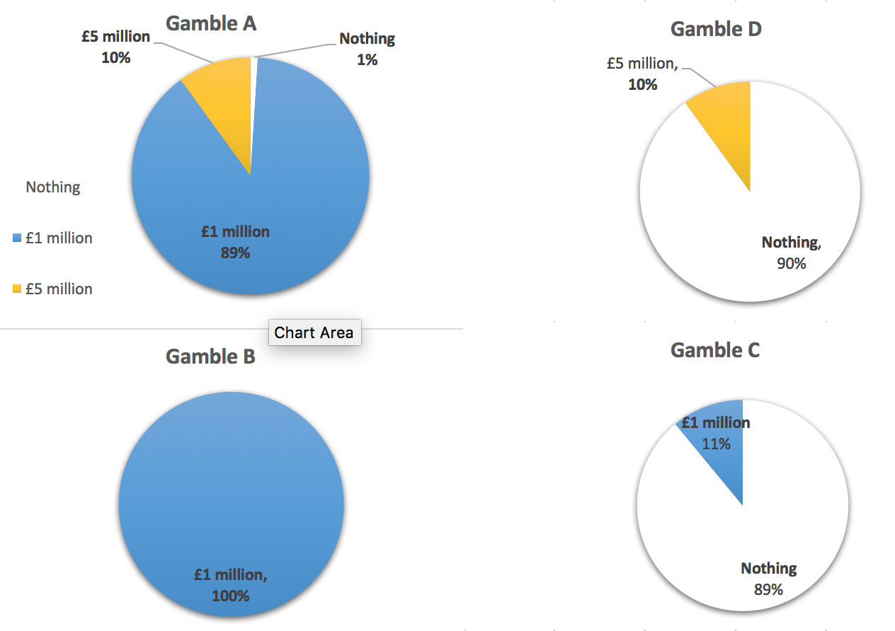
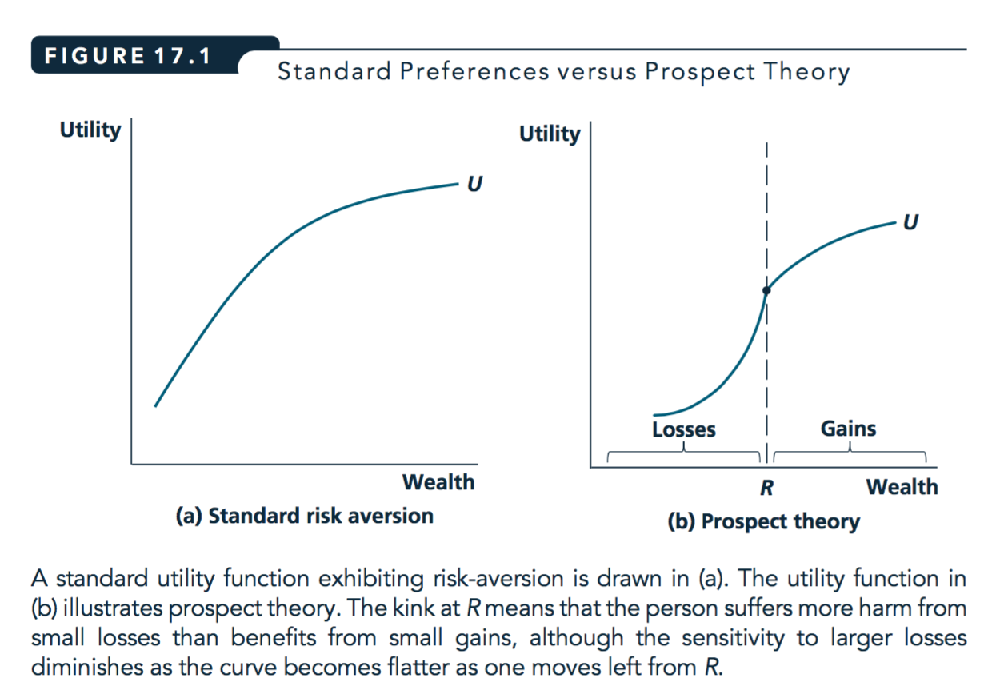
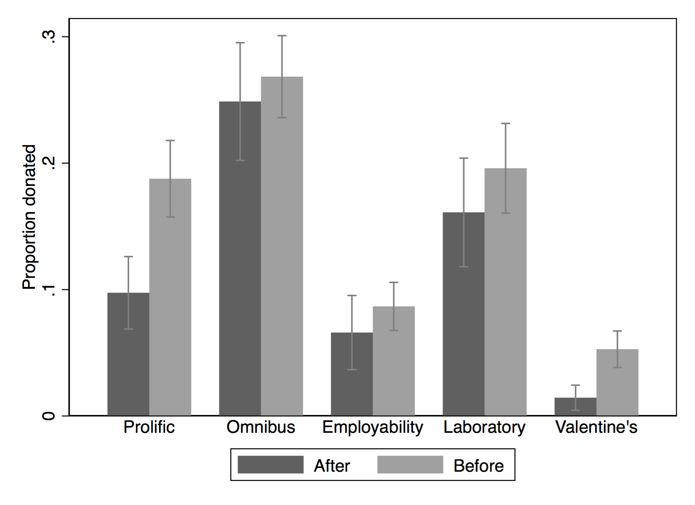

16 Behavioural economics [1-2 hours] (week 12)
16.1 Behavioural economics
Covers selected parts of NS: Ch 17, plus supplements
Eighth problem set: Behavioural economics
Thou shalt be carefully sceptical; critique do not just criticise; Consider the assumptions made; Consider the evidence
16.2 Neoclassical versus Behavioural economics
(Neo)classical:
- Firms maximise profit
- Individuals/households have a consistent utility function which they act ‘rationally’ to maximise
- Mainly: focused on own consumption, ignores ‘cognitive costs’, ignores ‘malleable and changing preferences’
Notes:
Classical economics assumes
- Optimization of a consistent ‘normal’ utility function subject to known constraints
- Only own consumption matters?
- No cost to gather information or make calculations?
Expected utility over gambles/investments, probabilities accurately known
Geometric discounting of future payoffs with a single (or at least a consistent) discount rate
Adv: E.g., if \(\delta=0.1\) in each period then next period’s payoff of 100 is worth as much as \((1-0.1) \times 100 = 90\) today.
A payoff of 100 in two periods is worth as much as \((1-0.1) \times 100 = 90\) tomorrow, or as much as \((1-0.1) \times (1-0.1)\times 100 = 81\) today.
Strategic behaviour in interactions - Common knowledge of rationality, Nash equilibrium?
We can find behaviour and outcomes that seem to contradict the above assumptions.
This ‘non-classical’ behaviour is (arguably) common, significant, and follows predictable patterns
Should we then stop learning classical economics?
16.3 Classical economists are not naïve
They know preferences change, people make mistakes, etc.
Justifications include:
- ‘Most people, most of the time,’ and many mistakes will be ‘fixed’ by the market.
- Strong predictive power
- ‘Normative’: how we ‘should’ behave to get the best outcomes
- A good starting point, framework for insight, benchmark
16.4 Behavioural Economics
Relaxes some of the assumptions above, usually one at a time
Does not typically ‘reject rationality’ (‘bounded rationality’)
Most “behavioral models” involve some sort of optimization (and often equilibrium) - There are ‘pure behavioral theorists’ who try to find parsimonious models to explain deviations
Most influential authors: Kahneman and Tversky
16.5 Modern consensus/entente
Both classical and behavioural economics are useful
- Different models and techniques (for different spheres?)
Notes:
16.6 Limits to Human Decision Making: An Overview
There are four general ways people diverge from classical assumptions (text says three)
Limited cognitive ability – difficult and costly to make complex decisions
Limited willpower – self control problems
Limited self interest – care about others (fairness, altruism), issues beyond income/consumption
Inconsistent, changing, and ‘non-outcome-based’ preferences
16.7 Limited cognitive ability
- Complexity of problems
- Optimising calculations take time; this may itself be a cost
- A ‘simplifying decision-making rule’ (rule-of-thumb) may be better if it saves these costs
- Relevant both to individual decision-making (consumption, investment) and strategic choices
- Game theory: recall ‘iterated strict dominance’ and ‘backwards induction’
- Optimising calculations take time; this may itself be a cost
- People (seem to) systematically misunderstand probabilities (and other maths concepts)
16.7.1 Application: lack of financial literacy
- Consumers who underestimated interest rates in quizzes held the highest interest loans in real life
- Particularly when government ‘truth in lending laws’ were lax
Evidence from Stango and Zinman, 2011

- Suppose you had £100 in a savings account and the interest rate was 2% per year. After 5 years, how much do you think you would have in the account if you left the money to grow:
A. More than £102
B. Exactly £102
- Consumers who underestimated interest rates in quizzes held the highest interest loans in real life (Stango and Zinman, 2011) - Particularly when government ‘truth in lending laws’ were lax
- Imagine that the interest rate on your savings account was 1% per year and inflation was 2% per year. After 1 year, would you be able to buy:
A. more than
B. exactly the same as, or
C. less than today
- Do you think that the following statement is true or false? ‘Buying a single company stock usually provides a safer return than a stock mutual fund.’
(True/False)
Around the world, across many studies, less than half answer all three correctly. Lusardi and Mitchell, 2013; In Germany and Switzerland, just over 50% get all three right. In most other surveyed countries, the numbers are far lower. E.g., in the USA 65% get the interest rate question right, 64% the inflation question, and 52% the diversification question.
16.8 Allais paradox
- Gamble A: an 89% chance of winning £1 million, a 10% chance of winning £5 million, and a 1% chance of winning nothing.
- Gamble B: £1 million with certainty.
Write down: which would you choose?
Scenario 2. Which would you choose?
- Gamble C: an 89% chance of winning nothing and an 11% chance of winning £ 1 million.
- Gamble D: a 90% chance of winning nothing and a 10% chance of winning £5 million.
Which would you choose?
Many people choose B over A and choose D over C:
\[B \succ A \]
\[ £1m \succ (£ 1m \otimes 0.89 + £ 5m \otimes 0.1 + £0 \otimes 0.01)\] \[D \succ C \] \[(£ 0 \otimes 0.9 + £ 5m \otimes 0.10) \succ (£ 0 \otimes 0.89 + £ 1m \otimes 0.11) \]
i.e.,
\[ £ 1k \succ (£ 1k \otimes 0.89 + £ 5k \otimes 0.1 + £0 \otimes 0.01)\]
But this contradicts Expected Utility theory:
- If \(B \succ A\) then \(EU(A) > EU(B)\)
- \(\rightarrow u(1m) > 0.89 \: u(1m) + 0.1 \: u(5m) + 0.01 \: u(0)\)
- \(\rightarrow\) \(0.11 \: u(1m) > 0.1 u(5m) + 0.01 \: u(0)\)
- If \(D \succ C\) then \(EU(D)>EU(C)\)
- \(\rightarrow 0.9 \: u(0) + 0.1 u(5m) > 0.89 \: u(0) + 0.11 \: u(1m)\)
- Implying \(0.1 \: u(5m) + 0.01 \: u(0) > 0.11 \: u(1m)\)
- Contradicting the above!
Note there is a ‘reversal’:
In choosing B over A you gave up a 10% chance of £5000 to get a 1% greater chance of £1000
… but in choosing D over C you gave up a 1% greater chance of £1000 to get a 10% change of £5000
Explaining it again with pie charts…

{A is D plus an additional 89% chance of £1m}
{B is C plus an additional 89% chance of £1m}
{So “A and B” are “D and C” with }
{EU additive} \(\rightarrow\): {choice for remaining 11% state ignores }
By the EU calculation I make choices over which I prefer for the (remaining) 11% of the time without considering what happens 89% of the time. ‘Independent states of the world’.
SO WHY do people choose B over A and D over C?
- One theory: People overweight small probabilities
- \(\rightarrow\) Gamble A: the 1% chance of 0 is treated as larger?
16.8.1 Kahneman and Tversky scenariae
Warning: This is not the standard Allais paradox, it is a different paradox.
KT1. Which would you choose?
You get £1000 upfront.
Gamble $A: You have an 50% chance of winning an additional £$1,000.
Gamble $B: An additional £$500 with certainty.
Write down: which would you choose?
KT1. Which would you choose?
You get £2000 upfront.
Gamble \(C\): You have an 50% chance of losing £1,000.
Gamble \(D\): You lose £500 with certainty.
KT1: You get £1000 upfront.
Gamble \(A\): You have an 50% chance of winning an additional £1,000.
Gamble \(B\): An additional £500 with certainty.
KT1: You get £2000 upfront.
Gamble \(C\): You have an 50% chance of losing £1,000.
Gamble \(D\): Lose £500 with certainty.
KT (hypothetical) experiment: 16% of subjects chose \(A\) over \(B\), and 68% chose \(C\) over \(D\)
- But \(A\) is the same as \(C\) (50/50 chance of £1000 or £2000),
- and \(B\) is the same as \(D\) (certain £1500)!
Seems to depend on how we ‘frame’ these.
16.9 Explaining the above paradoxes with prospect theory
- Above choices: cannot be explained by ‘regular’ EU theory
- Mistakes, misunderstanding probabilities?
- Prospect theory, loss-aversion: not mistakes, but maximising something other than EU
16.9.1 Prospect theory – loss aversion (LA) part
- People don’t think only about outcomes but about ‘gains or losses relative to a reference point’
- Outcomes considered losses are particular painful
- Whether an outcome is a loss depends on the reference point
- which may depend on how a decision is framed
- or on the starting point, or initial expectations
\(\rightarrow\) may make decisions to ‘avoid losses’
that we wouldn’t make if we saw it as ‘increasing gains’
16.9.2 Standard and loss-averse utility

Notes:
What leads to the paradoxes and ‘inconsistent behaviour’?
The fact that the reference point can vary depending on things that are ‘irrelevant’ from an EU perspective
16.9.3 KT experiment with prospect theory (loss aversion)
KT1: £1000 upfront.
- Gamble \(A\): You have an 50% chance of winning an additional £1,000.
- Gamble \(B\): An additional £500 with certainty.
KT2: £2000 upfront.
- Gamble \(C\): You have an 50% chance of losing £1,000.
- Gamble \(D\): You lose £500 with certainty.
- In KT1, your reference point may be £1000.
- Choose between A—a small certain gain and B—a larger uncertain gain; with same EV
- … standard risk aversion predicts choosing B
- In KT1, your reference point may be £2000.
- Choose between C—a possible large loss and D—a certain smaller loss (with same EV)
- … standard risk aversion predicts choosing D
- But if feeling of loss is very painful, may choose C>D to have a 50% chance of avoiding pain
Note: This may help explain why some problem gamblers incur larger and larger losses to try to ‘make up’ for bad performance earlier in the day.

- Framing effect
- The same choice, presented in two different ways, may lead to different decisions.
16.9.4 Allais redux: loose prospect theory (Loss Aversion) explanation
Note: We previously mentioned misweighting probabilities as an explanation for this.
An alternative explanation could be loss-aversion
- A: 89% chance of £1,000, a 10% chance of £5,000, 1% chance of 0.
- B: £1,000 with certainty.
- C: 89% chance of 0 and 11% chance of £1,000.
- D: 90% chance of 0 and 10% chance of £5,000.
- Considering A & B, the ref. point may be close to £1000, as this can be had with certainty.
- A seem to ‘risk a costly loss of £1000’, thus may choose ‘safer’ \(B>A\), notwithstanding its far lower EV (£1000 vs £1390)
- Considering D & C, ref. point may be close to 0, as EV’s of each are low, & 0 is likeliest outcome
- So ‘don’t worry about losses’, choose D > C bc higher EV (£500 vs. £110)
Note: Skipped in lecture for time constraints: limited reasoning steps – Centipede game; you can read this if you like; remember, things like this may provide you ‘ammunition’ on an essay question.
16.10 Limited willpower and ‘hyperbolic discounting’
2019-20: We will cover this only very briefly because of time limitations

Notes:
In the 1960’s-70’s Stanford experiment. Children could have 1 marshmallow now or 2 in 15 minutes if they could resist temptation.
There is some evidence that this correlates to later life outcomes (test scores, degrees, BMI, etc).
Strong results; interpretation debated.
This result is now in question! The strongest results have failed to replicate. See a popular discussion here.
Monday-David wants Tuesday-David to give up 1 marshmallow for 2 marshmallows on Wednesday.
But Monday-David unwilling to give up 1 marshmallow for 2 marshmallows on Tuesday.
Similarly, Tuesday-David won’t give up 1 marshmallow for 2 on Wednesday
- Inconsistency: Monday-David thinks Tuesday-David is acting sub-optimally!
- Is David acting in his own interest? Can we even define his ‘true utility’?
- Hyperbolic discounting (simple version)
- Steep drop in ‘weight \(w\)’ on payoffs earned after the current period
- But constant weight (or constant discounting) for payoffs multiple periods in the future
- This leads to inconsistencies between ‘planned’ and chosen behaviour
Compare two ‘streams of payoffs’
Work: -10 today, +2 for the next 6 days
Lazy: -5 today, +1 for next 6 days
Examples: Should you…?
study very hard on Sunday to be prepared for the whole week,
Get a good workout to feel energized the whole week
Clean your flat on Sunday …. etc.
Grasshopper weights payoffs today, tomorrow, and every day the same: \(w=1\)
- Monday, Grasshopper compares Work to Lazy, and chooses Work.
- payoff(Work) \(= -10 + (2 \times 6) = 2\)
- payoff(Lazy) \(= -5 + (1 \times 6) = 1\)
Ant always weights payoffs at 1 today and \(w=1/2\) on any future day
- Monday, Ant chooses Lazy:
- payoff(Work) \(= -10 +(2 \times 6)/2 = -4\)
- payoff(Lazy) \(= -5 + (1 \times 6)/2 = -2\)
If Grasshopper were ‘choosing for Monday on Sunday’, he would choose Work \(\rightarrow\) Consistent
But if Ant were ‘choosing for Monday on Sunday’, he would choose Work \(\rightarrow\) Inconsistent
- On Sunday he considers
- payoff(Work Monday) \(= (-10 + 2 \times 6)/2 = 1\)
- payoff(Lazy Monday) \(= (-5 + 1 \times 6)/2 = 1/2\)
- But as we saw, on Monday he chooses to be lazy
- Would he ‘benefit from pre-committing?’
16.10.1 Application: ’put a contract out on yourself
16.11 Altruism and fairness
‘Other-regarding preferences’: My utility may be impacted by…
- Other people’s utility, or their consumption of particular ‘merit’ goods
- E.g., I suffer if I know my neighbour suffers, or her child eats too little
- \(\rightarrow\) ‘aid to the poor’ may become a public good; may be massively under-provided in a voluntary setting
- My perceived ‘impact’ on outcomes
- If I donate to charity, I feel better
- If my contribution improves people’s lives, protects the environment (relative to my having done nothing)
- \(\rightarrow\) People may make choices reducing their own consumption, to increase other’s consumption
- Charitable giving is widespread; accounts for about 1% of UK GDP
- ‘Donations’ to family members much higher
The utilities, and decisions, of family members are highly connected. There is an ongoing debate and research programme considering when to model a household’s decisions as ‘unitary’ and when to consider the individual preferences of the household members.
… ‘Other-regarding preferences’: My utility may be impacted by…
- My reputation and how others perceive me
- \(\rightarrow\) People may donate and cooperate more when observed
- How ‘fair’ I believe the outcomes and actions taken are
- \(\rightarrow\) People reject significant positive offers in ultimatum games and bargaining
- Anticipating this, people make offers considerably above zero
- \(\rightarrow\) People cooperate when they expect others to do so
- \(\rightarrow\) people engage in ‘costly punishment’ of others they believe acted unfairly
- \(\rightarrow\) People reject significant positive offers in ultimatum games and bargaining
16.11.1 Converting from ‘material payoffs’ to ‘psychological payoffs’
- As noted, the ‘real’ payoffs in a game (or an individual decision) may not be identical to the monetary/material payoffs
- (Note, this is a separate point than ‘diminishing marginal utility’ and risk-aversion)
- Motives like ‘fairness’ may transform monetary payoffs into ‘real’ payoffs in a straightforward way
- E.g., in the ultimatum game, suppose player 1’s real payoffs are:
\[U_1(Y_1,Y_2) = Y_1 - |Y_1-Y_2|\]
Where \(Y_1\) is the amount 1 earns from the ultimatum game, and \(Y_2\) is 2’s income from this game.
Similarly for player 2:
\[U_2(Y_2,Y_1) = Y_2 - |Y_1-Y_2|\]
Here each player gains 1 unit of utility for each pound they earn, but loses a unit of utility for every pound of difference between the payoffs.


Notes:
Here if earnings are equal, real payoffs are the same as earnings; 0,0 or 5,5
Where earnings are unequal, player-1 gets 9 and player-2 gets 1 from material payoffs.
But because of a difference of 8 in earnings, both players lose 8 in psychological payoffs
so the net real payoffs if player-1 offered 1 and 2 accepted would be 9-8=1 for player-1 and 1-8=-7 for player-2.
Using BWI here we see the subgame perfect NE will be that player-1 offers 5 and player-2 accepts.
‘Envy payoffs’

Notes:
Here we assume because of ‘envy’, real payoffs equal material payoffs minus the difference in payoffs for the player with lower payoffs only.
For the outcomes considered, only player-2’s payoffs are adjusted from the material payoffs;
she gets 1-8 = -7 from accepting an offer of 1; her payoff is 1 but she loses 7 in envy.
Because of this she will not accept such an offer. Knowing this, player-1 will offer 5.
16.12 Supplemental (reading): Evidence on the Ultimatum Game
Guth et al. (1982) presented the first experimental test of the ultimatum game.
2 players: Proposer and Responder
Proposer has a pie of size 1. She must propose a split of the pie between the two players \((1-s, s)\)
The Responder may:
- accept (in which case the split is executed)
- reject (in which case both players get zero
This is a ‘take it or leave it offer’ in bargaining. What do you think he/she will offer? Do you think he/she will accept? Why or why not?
16.13 Ultimatum game: theoretical predictions
Allowing ‘non-credible threats’, this game has as many Nash equilibria as there are possible splits of the pie
In each of them, the Responder’s strategy is to ‘accept only if offered X (or more)’ for some \(X\geq0\), and the Proposer’s strategy is to offer exactly X.
But maybe these equilibria don’t seem like reasonable predictions (why?)
Q: What does SPNE predict (use backwards induction)?
If the split is \((1,0)\), the Responder is indifferent between accepting and rejecting
That still means the Proposer offering \((1,0)\) and the Responder accepting is a NE
The subgame-perfect Nash equilibrium is found by solving the game backwards:
- The Proposer (correctly) anticipates the Responder will accept any offer
- Thus she offers zero, which is accepted ‘in equilibrium’
- A ‘near zero’ offer would lead to a similar result, and might seem more intuitive
Note, These are basic game theoretic predictions, not Behavioral.
16.13.1 What happens in experiments?
- Class question: What do you think?
- 50-50 split is the most common offer
- Responders tend to reject offers giving them less than 30%, even when this is a lot of money
Potential explanations
- Fairness concerns; monetary payoffs may not represent actual payoffs
- Proposers may anticipate this
In a variety of cultures and contexts (Henrich et al, 2006):

16.14 Application: Give-if-you-win (EU vs. Prospect theory)

EU over outcomes predicts these choices are the same
Here, in choosing conditional choices ‘if I win’ etc., the decision for each state (win or lose) are separate.
- Max \(EU = pr(win)u(win,choice if win) + pr(lose)u(lose,choice if lose)\)
- Choice for ‘if I win’ does not affect payoff ‘if I lose’
- Before: Anticipate what my utility-maximising donation \(g^*\) would be if I win the bonus
- Let \(c\) be own consumption, \(Y\) income pre-bonus, \(w\) the bonus amount, and \(g_b\) the committed donation ‘if you win \(w\)’
- Choose \(g_b\) to maximize utility \(u(c, g)\) s.t. budget constraint \(c+g \leq Y+w\)
- If asked to pre-commit ‘if I win’, I commit to that choice, so \(g_b=g^*\)
- After: After I have won the bonus \(w\), I maximize utility \(u(c, g)\) s.t. budget constraint \(c+g \leq Y+w\)
- Same maximisation as above, so \(g_a=g_b=g^*\)
Other models predict distinct outcomes
- Reputation: If I give to benefit my reputation or self-esteem, unrealised donations may matter, not just donation outcomes
- May be an incentive to commit more the less likely a donation needs to be paid
- ‘If I win the lottery megabucks, I will give it all away’
- Loss aversion: If I am ‘loss averse’ over my own consumption, it may seem ‘cheaper’ to commit before I win the bonus than after
- Why? Because my reference point may change.
- Suppose I’ve £50k income and a potential £50k bonus with 50% probability
- Before winning my reference consumption may be the EV, £75k
- So a conditional donation to donate £10k if I have a total income+bonus of £100k may not seem like a loss
- But after I win the bonus, my new reference consumption may be £100k
- So each pound donated might feel like a loss
What do you think happens when you ask people to donate either Before-conditionally or After winning a prize or bonus? Do they commit more ‘before’ than they give ‘after’, or vice versa, or are these equivalent?
16.14.1 Field experiment
One field experiment: Essex UG students
Details: Sign in with email, orthogonal employability treatments.
\(\rightarrow\) 352 valid responses with donation opportunities
Before charity treatments


Results: In a variety of experiments, donation incidence and amounts are often higher and never lower in the Before treatment. This is statistically significant in two of five experiments and in the ‘pooled’ data.

Adv: see https://davidreinstein.wordpress.com/research-and-publications/ under ‘working papers’
More details of this project at giveifyouwin.org

16.15 Suggested practice problems from Nicholson and Snyder chapter 17 (12th ed)
- 17.2
- 17.3
- (17.5)
- 17.7
- (17.8) - has video solution
- 17.9
CUT: revisionlec2016_17.md
16.16 Revisiony lecture: Behavioral economics (L13)
Below, I provide some revision material and questions focusing on Behavioral economics
Final exam format, relevant question
Sources of evidence on various departures from classical assumptions
- Time permitting: Some MCQ’s from formative assessment comment: <> (2024EE)
16.16.1 Sources of evidence and discussion
I want you to have a decent background on…
- The Allais Paradox: setup, evidence, explanations
- Inconsistent preferences, impatience and ‘hyperbolic discounting’ (However, the mechanics of this are not emphasized)
- ‘Solving converted games’
- Some sense of the evidence ‘for behavioral economics’ in general
- Evidence on voluntary public goods provision and charitable giving (lab, field, etc) and factors leading to greater provision of each
- Relevance of ‘behavioural biases’ for public policy and business
Evidence in general, some helpful (easier) readings
Very good examples and applications in your text (Chapter 17), given references
DellaVigna, Stefano. “Psychology and economics: Evidence from the field.” Journal of Economic literature 47.2 (2009): 315-372.
“EAST: Four simple ways to apply behavioural insights” (BIT, 2014)
Also see popular books and web-tools by Dan Ariely (‘Arming the Donkeys’), Richard Thaler, etc.
Yudkowski’s blogs \(\rightarrow\) ‘From AI to Zombies’
Allais paradox
Writeup in Wired magazine HERE
Yudkowski on the Allais paradox
See also Misweighting probabilities …many useful readings on LessWrong.org
Public goods contributions
- Chaudhuri, 2009. Sustaining cooperation in laboratory public goods experiments: a selective survey of the literature
(25 marks) In this module we discussed major ways in which behavioural economists argue that people diverge from classical assumptions. Briefly explain each of these four ways, citing some evidence (academic or anecdotal) for each.
There are four general ways people diverge from classical assumptions
1. Limited cognitive ability \(\rightarrow\) difficult and costly to make complex decisions
It may be very costly and difficult to do the calculations that we assume are part of standard maximization. Rather than strictly finding the optimal consumption bundles, choosing the optimal number of hours to work per day, calculating the optimal investment portfolio, etc. people may use heuristics and ‘rules of thumb’.
This is too long an answer, I’m just giving you some ideas
Systematically incorrect answers to simple financial literacy questions; and responses correlate with holding an extremely high interest loans.
Many people state they have keep separate fixed budgets for different categories of expenditure (food, vacations, charity etc).
In marketing/behavioral experiments adding more choices has sometimes been found to reduce purchases within a category.
Also, adding an (unchosen) ‘largest size’ choice seen to increase consumption of the second largest choice (heuristic: ‘choose the middle option’)
See also ‘taxi driver’s heuristic’
People struggle to make choices that they know are in their best long-term interest. (Evidence: see next part)
Significant charitable giving (1% of UK GDP), large part of income spent on family and gifts. Rejection of positive offers in ultimatum game experiments (in various lab and naturalistic contexts). Contribution to linear public goods, cooperation in prisoners dilemmas, even in 1-shot games …
People seem to act to maximise targets and avoid losses relative to reference points. For example several papers report evidence consistent with people (e.g., taxi drivers) setting ‘earnings targets’ and thus working on days when their per-hour earnings are higher (and they should know this). It can be shown that if drivers were to work fewer hours on ‘bad’ and more hours on ‘good’ days they could more money working the same number of hours, and even have less variance in a number of hours they work. This cannot be reconciled with a model maximising an unchanging utility function.
(25 marks) For of the major departures above, give a of such behaviour, and briefly describe the nature of the evidence for this, and present one behavioural economics model explaining this behaviour.
‘Specific example of behaviour’
The Allais paradox offers evidence against Expected Utility maximisation (over outcomes) and in line with Loss Aversion and Prospect Theory.
Scenario such as
Gamble A: 89% chance win £ 1 mln, 10% chance win £ 5 mln, & 1% chance win 0.
Gamble B: £1 million with certainty.
Gamble C: 89% chance of winning 0 and an 11% chance of winning £1 million
Gamble D: a 90% chance of win 0 and 10% chance of winning £5 million.
Consistently in hypothetical and incentivised experiments people tend to choose B over A and also choose D over C.
:
If \(B \succ A\) then \(EU(A) > EU(B)\)
\(\rightarrow U(1m) > 0.89 \: U(1m) + 0.1 \: U(5m) + 0.01 \: U(0)\)
\(\rightarrow\) \(0.11 \: U(1m) > 0.1 U(5m) + 0.01 \: U(0)\)
However, if \(D \succ C\) then \(EU(D)>EU(C)\)
\(\rightarrow 0.9 \: U(0) + 0.1 U(5m) > 0.89 \: U(0) + 0.11 \: U(1m)\)
Implying \(0.1 \: U(5m) + 0.01 \: U(0) > 0.11 \: U(1m)\)
Contradicting the above!
‘Describe the nature of evidence for this’
In hypothetical experiments by Kahneman and Tversky, as well in experiments with real incentives (e.g., Huck and Muller), people tend to choose B over A, and also to choose D over C. (Sometimes the same people will make of these apparently inconsistent choices but in general the differences in proportions are large enough that we can show the general pattern even if we’re only asking people to make a single choice.)
‘…and present one behavioural economics model’
Theory: People evaluate outcomes relative to . Falling below these reference points is particular costly to utility; the usual specification models utility as the some of a standard risk-averse utility function and a ’ gain-loss’ utility function. The latter is negative where some outcome (e.g., earnings) falls below a reference point; it’s slope is assumed to be greatest for ‘small losses’ and then more gradual for larger losses. In net this can make people risk seekers over a range of losses, willing to increase the risk of a large loss to reduce the risk of a small loss. The reference points themselves may change depending on the framing of the decision, on previous expectation, on unrealised states, and in general on things that are not relevant to future material outcomes of the decision.
Considering A & B, the ref. point may be close to £1000, as this can be had with certainty.
- A seems to ‘risk a costly loss of £1000’, thus may choose ‘safer’ \(B>A\), notwithstanding its far lower EV (£1000 vs £1390)
Considering D & C, ref. point may be close to 0, as EV’s of each are low, & 0 is likeliest outcome
- So ‘don’t worry about losses’, choose D over C because higher EV (£500 vs. £110)
This could also be shown with a diagram of EU in income, and a shifting reference point; see notes and text
By the way, here are some more behavioural econ problems to practice … from Nicholson and Snyder chapter 17 (12th ed, 11th similar)
- 17.2: this will be especially helpful for understanding the EU basis of the Allais Paradox
- 17.3
- (17.5)
- 17.7: pretty good setup for time inconsistent behaviour
- (17.8) - also a good setup for time inconsistency, has video solution on CourseMate
- 17.9 - decent for understanding loss aversion. Should say ‘would his choice change if his reference point’ (‘if’ is missing)